Stereo-seq Mouse Embryo: Segmented Cells
Source:vignettes/stereoseq_mouse_embryo_cells_giottodisk.Rmd
stereoseq_mouse_embryo_cells_giottodisk.Rmd1 Overview
This tutorial analyzes the 925,850 cells that STOmics’ SAW pipeline segmented on a whole mouse embryo section, the Stereo-seq mouse embryo demo dataset on a 2 × 2 cm chip. It reads the cells into an on-disk GiottoDisk project, clusters them and names the clusters with a cluster tree. It then finds spatial domains by smoothing each cell’s expression with that of its neighbors, without loading the 0.5 µm spots. The whole tutorial runs in about 26 minutes with 8 parallel workers and peaks at about 57 GB of memory; Run time and memory shows each step.
The Stereo-seq human colon tutorial runs the same cell analysis on a smaller section, and builds its spatial domains from the spots instead.
2 Install extra packages
This tutorial uses GiottoDisk for on-disk processing. These are preview dev builds off the dev and gsource Giotto package branches. If GiottoDisk has not been installed yet, use the following:
# GiottoDisk install
GiottoUtils::suite_install("GiottoDisk")
# Optional for matrix maths speedup:
install.packages("GiottoKernels",
repos = c("https://giotto-suite.r-universe.dev", "https://cloud.r-project.org")
)3 Dataset explanation
A formalin-fixed paraffin-embedded (FFPE) sagittal section of a whole mouse embryo on a 2 × 2 cm Stereo-seq chip (Y40056J8K9), made with the Stereo-seq N FFPE V1.1 kit, stained for single-stranded DNA (ssDNA) and processed with SAW 8.3. It is one of the STOmics demo datasets. Stereo-seq captures transcripts on spots 0.5 µm apart; SAW sums them into square bins and, separately, into cells.
SAW segments the nuclei in the ssDNA image and assigns the spots to
cells. Y40056J8K9.adjusted.cellbin.gef holds the result of
SAW’s cell correction, which refines which spots belong to each cell.
This tutorial uses these adjusted cells, the default of the Giotto
readers: 925,850 cells with a median of 849 counts and 623 genes each.
The uncorrected Y40056J8K9.cellbin.gef has half as many
counts per cell. The spots themselves, in
Y40056J8K9.tissue.gef (17 GB), are not needed here.
| File | Size | Contents |
|---|---|---|
Y40056J8K9.adjusted.cellbin.gef |
4.2 GB | cell by gene counts, cell outlines |
Y40056J8K9_ssDNA_regist.tif |
598 MB | ssDNA image, registered to the chip |
3.1 Download links
The two files are on the STOmics demo server. Put them in one folder:
base=https://demo.stomicsdb.tech/Y40056J8K9_Mouse_Embryo_Stereo-seq_FFPE_LCD_V1.1_ssDNA/outs
curl -C - -O $base/Y40056J8K9.adjusted.cellbin.gef
curl -C - -O $base/Y40056J8K9_ssDNA_regist.tifThe Giotto Stereo-seq readers take this folder as downloaded, with
the files side by side, as well as a SAW outs/ directory
with feature_expression/ and image/
subdirectories.
4 Setup
library(arrow) # this must be libraried before terra or GiottoClass
library(Giotto)
library(GiottoDisk)
data_dir <- Sys.getenv("EMBRYO_DATA_DIR", "path/to/Y40056J8K9")
project_dir <- Sys.getenv("EMBRYO_PROJECT_DIR", "path/to/stereoseq_embryo_cells_project")
# set an appropriate amount of parallel workers for your computer
future::plan(future::multisession, workers = 8)5 Read the data
sourceCreate() sets up a gDirSource: a
managed project directory that holds the object on disk.
setArtifactDumpDir() points the expression and spatial
writes at it.
# declare a Giotto directory backend to use
gdsrc <- GiottoDisk::sourceCreate(project_dir, type = "gDirSource")
# point data content writes to the backend's artifact subdirectory
GiottoDisk::setArtifactDumpDir(gdsrc)createGiottoStereoSeqObjectCell() reads the adjusted
cellbin GEF: the cell by gene counts, the cell centers and outlines, and
the registered ssDNA image. Passing the backend to backend
creates the object as a disk-backed project.
g <- createGiottoStereoSeqObjectCell(data_dir,
gef_type = "adjusted_cellbin",
backend = gdsrc # creates the object as a backed project
)
gAn object of class giotto
>Active spat_unit: cell
>Active feat_type: rna
dimensions : 29143, 925850 (features, cells)
[SUBCELLULAR INFO]
polygons : cell
[AGGREGATE INFO]
expression -----------------------
[cell][rna] raw
spatial locations ----------------
[cell] raw
attached images ------------------
images : image
Use objHistory() to see steps and params usedThe cell outlines over the ssDNA image, in a 0.4 mm window over the heart:
roi_x <- 23600
roi_y <- -24600
half <- 400 # spots; 0.2 mm at 0.5 um per spot
spatInSituPlotPoints(g,
show_image = TRUE,
feats = NULL,
show_polygon = TRUE,
polygon_feat_type = "cell",
polygon_color = "yellow",
polygon_alpha = 0,
polygon_line_size = 0.2,
xlim = c(roi_x - half, roi_x + half),
ylim = c(roi_y - half, roi_y + half)
)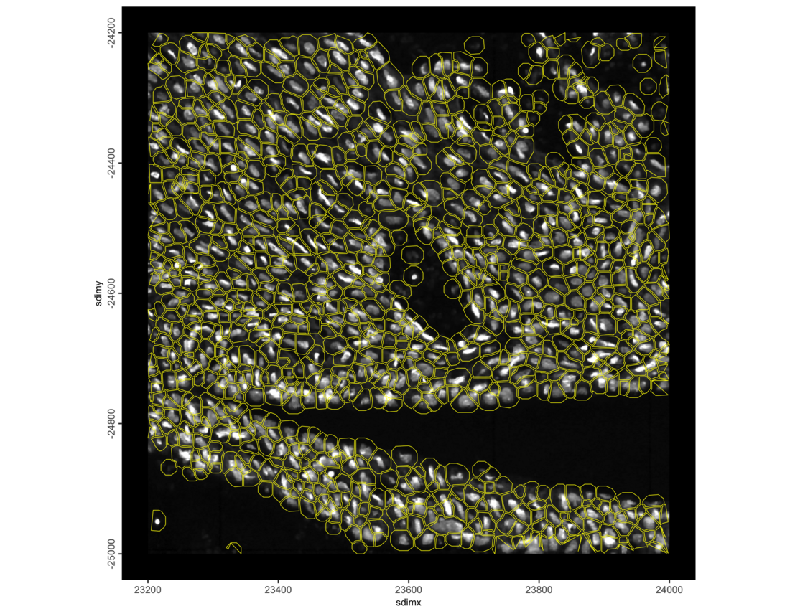
5.1 Save
Backed Giotto projects write named snapshots of the analysis state to the project directory.
# The return value is needed since saveGiotto makes changes during the write
g <- saveGiotto(g, name = "ingest") backend : `gDirSource`
path : path/to/stereoseq_embryo_cells_project6 Quality control and filtering
g <- addStatistics(g, expression_values = "raw")
cx <- pDataDT(g)
cat(sprintf("%s cells | median %d counts, %d features per cell\n",
format(nrow(cx), big.mark = ","),
median(cx$total_expr), median(cx$nr_feats))
)925,850 cells | median 849 counts, 623 features per cellThe most widely detected genes are the hemoglobins, the mitochondrial transcripts and, further down, the liver’s albumin and alpha-fetoprotein. The fetal liver makes blood at this stage, and its abundant transcripts reach cells across the whole section. Expect them among the markers of many clusters below.
head(fDataDT(g)[order(-perc_cells), .(feat_ID, perc_cells)], 8)
fDataDT(g)[feat_ID %in% c("Alb", "Afp"), .(feat_ID, perc_cells)] feat_ID perc_cells
<char> <num>
1: Hbb-bs 99.78225
2: mt-Co1 98.79181
3: mt-Co3 98.69169
4: mt-Nd4 97.76713
5: Eef1a1 97.05514
6: mt-Co2 96.75271
7: Hbb-bt 96.51563
8: mt-Atp6 96.37252
feat_ID perc_cells
<char> <num>
1: Afp 66.68953
2: Alb 91.63731A gene has to be detected in at least 100 cells to be kept, and a cell needs at least 100 detected genes.
g <- filterGiotto(g,
expression_threshold = 1,
feat_det_in_min_cells = 100,
min_det_feats_per_cell = 100,
verbose = FALSE
)
cat(sprintf("%s cells x %s features retained\n",
format(length(spatIDs(g)), big.mark = ","),
format(nrow(fDataDT(g)), big.mark = ","))
)922,035 cells x 23,130 features retained7 Normalize and select features
This is whole-transcriptome data, so highly variable features are
selected before the PCA. They are chosen by Pearson residuals
(method = "var_p_resid"), which work on the raw counts.
g <- normalizeGiotto(g,
scalefactor = 1e4,
logbase = exp(1),
log_offset = 1,
scale_feats = FALSE,
scale_cells = FALSE,
verbose = FALSE
)
g <- calculateHVF(g,
method = "var_p_resid",
n_top_feats = 2000,
verbose = FALSE
)8 Dimension reduction
g <- runPCA(g,
feats_to_use = "hvf",
ncp = 50,
scale_unit = TRUE,
center = TRUE,
verbose = FALSE
)
screePlot(g, ncp = 50)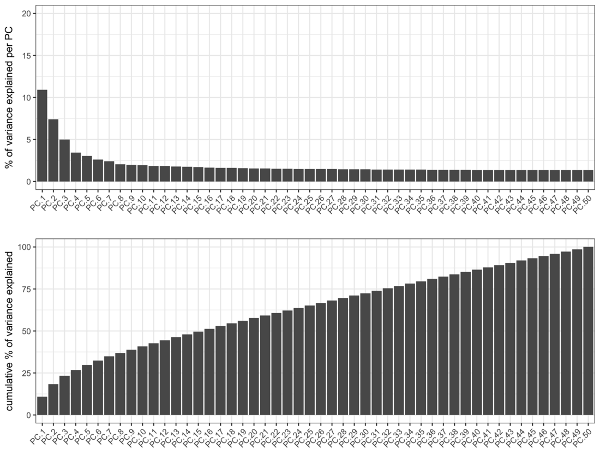
The first PCs explain the most, but the curve keeps falling slowly: a whole embryo holds many tissues, each needing a few PCs. The first 30 are used below.
9 Clustering
The kNN network is built first. runUMAP() then reuses it
instead of searching for neighbors again, and Leiden clusters on the
same network.
dims_to_use <- 1:30
g <- createNearestNetwork(g,
type = "kNN",
dimensions_to_use = dims_to_use,
k = 30,
engine = "hnsw",
verbose = FALSE
)
g <- runUMAP(g,
dimensions_to_use = dims_to_use,
n_neighbors = 30,
min_dist = 0.3,
verbose = FALSE
)
g <- doLeidenCluster(g,
nn_network_to_use = "kNN",
network_name = "kNN.pca",
resolution = 1,
n_iterations = 20,
objective_function = "modularity",
verbose = FALSE
)
table(pDataDT(g)$leiden_clus)
clusters <- GiottoUtils::mixedsort(unique(as.character(pDataDT(g)$leiden_clus)))
# one color per cluster, shared by the plots below
clus_colors <- stats::setNames(getDistinctColors(length(clusters)), clusters)
g <- saveGiotto(g, name = "clustered")
1 2 3 4 5 6 7 8 9 10 11
31365 88199 11903 54647 38612 101201 53195 25159 19470 25172 69473
12 13 14 15 16 17 18 19 20 21 22
34488 44040 13437 24536 14406 26725 37746 30146 12385 15646 223
23 24 25 26 27 28 29 30 31 32
2369 23285 16032 12485 1336 6097 78622 382 4099 5154
backend : `gDirSource`
path : path/to/stereoseq_embryo_cells_project
plotUMAP(g,
cell_color = "leiden_clus",
color_as_factor = TRUE,
cell_color_code = clus_colors,
point_border_stroke = 0,
point_size = 0.1
)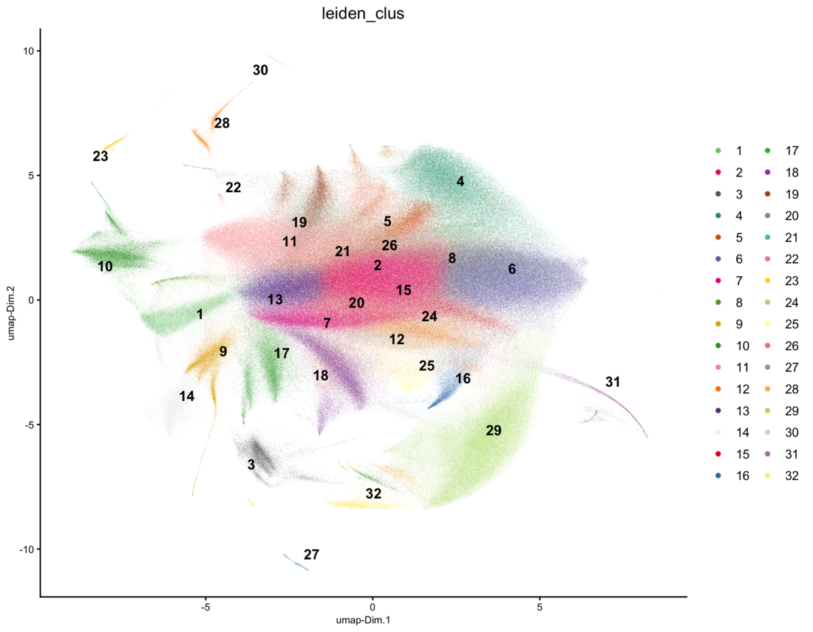
spatPlot2D(g,
cell_color = "leiden_clus",
color_as_factor = TRUE,
cell_color_code = clus_colors,
point_border_stroke = 0,
point_size = 0.15,
background_color = "black"
)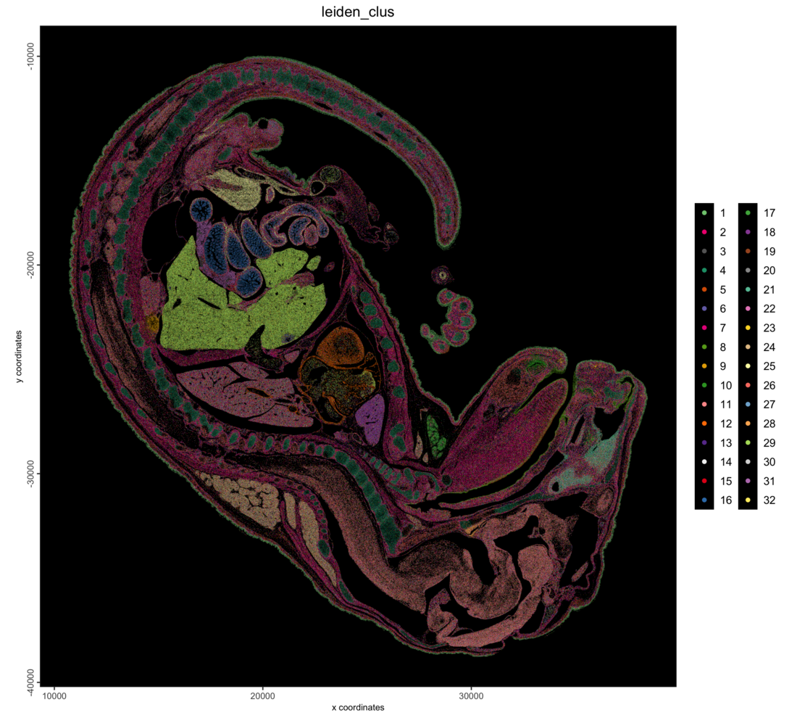
10 Cell typing with a cluster tree
The clusters are grouped into a tree by how similar their expression is. Each cluster and each branch of the tree then gets markers, and a language model names them from those markers. Cutting the tree gives cell type labels at coarser levels.
10.1 Build the cluster tree
CLUS <- "leiden_clus"
hvf <- fDataDT(g)[hvf == "yes"]$feat_ID
tree <- calculateClusterTree(g,
cluster_column = CLUS,
feats = hvf,
cor = "pearson",
distance = "average"
)
plot(tree, hang = -1)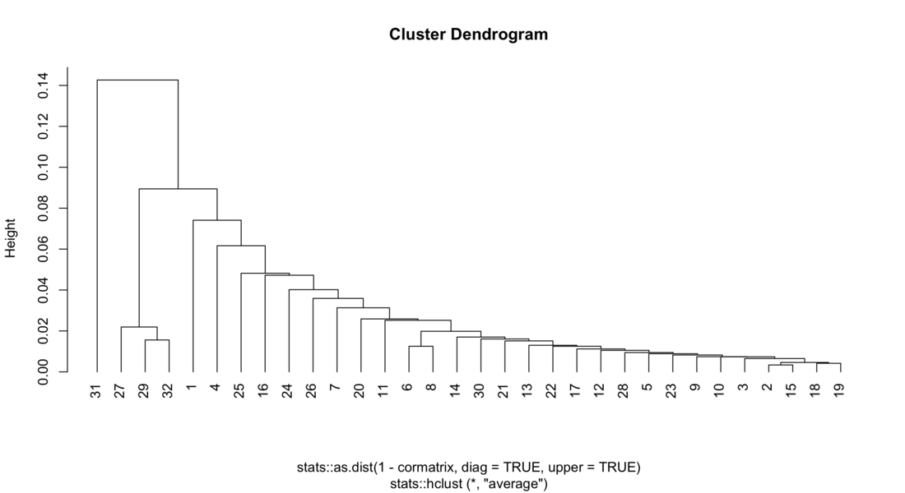
10.2 Markers
mk <- findMarkers_one_vs_all(g,
method = "scran",
cluster_column = CLUS,
min_feats = 10,
verbose = FALSE
)
gi <- findGiniMarkers_one_vs_all(g,
cluster_column = CLUS,
min_feats = 10,
verbose = FALSE
)
nm <- findClusterTreeMarkers(g,
cluster_column = CLUS,
tree = tree,
method = "scran",
verbose = FALSE
)10.3 Assemble the annotation prompt
writeClusterTreeQuery() writes the tree, the per-cluster
markers and the markers of each split into one prompt for a language
model, together with a description of the sample.
prompt_file <- file.path(tempdir(), "stereoseq_embryo_celltyping_prompt.txt")
q <- writeClusterTreeQuery(g,
cluster_column = CLUS,
tree = tree,
markers = mk,
gini_markers = gi,
node_markers = nm,
context = list(
tissue = "whole mouse embryo, sagittal FFPE section, late gestation",
assay = "Stereo-seq N FFPE V1.1 whole-transcriptome, SAW 8.3 adjusted cellbin from ssDNA segmentation"
),
file_name = prompt_file
)
cat(length(q), "lines\n")520 lines10.4 Scattered clusters
Before naming the clusters, check where they are. About half of them do not sit in one tissue but are spread over the whole section, even though each is defined by the genes of one organ. Two examples: cluster 18, defined by T cell genes (Rag1, Trbc1), and cluster 17, defined by salivary gland genes (Smgc, Pip):
for (cl in c("18", "17")) {
print(spatPlot2D(g,
cell_color = CLUS,
color_as_factor = TRUE,
select_cell_groups = cl,
cell_color_code = stats::setNames("#ffd23f", cl),
other_cell_color = "grey15",
point_border_stroke = 0,
point_size = 0.15,
other_point_size = 0.05,
background_color = "black",
show_plot = FALSE,
return_plot = TRUE
) + ggplot2::ggtitle(paste("cluster", cl)))
}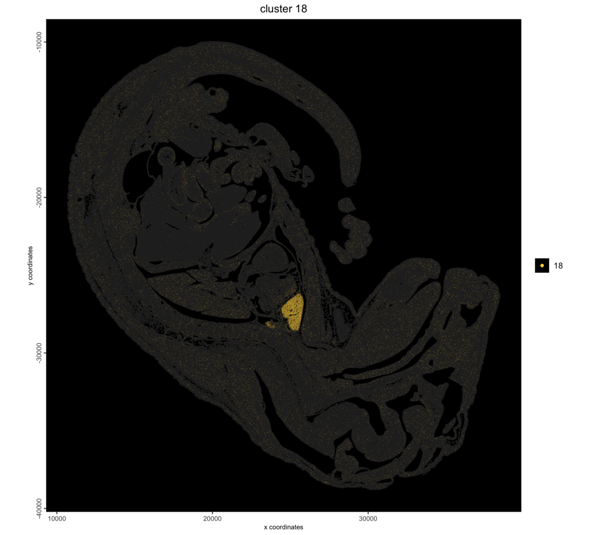
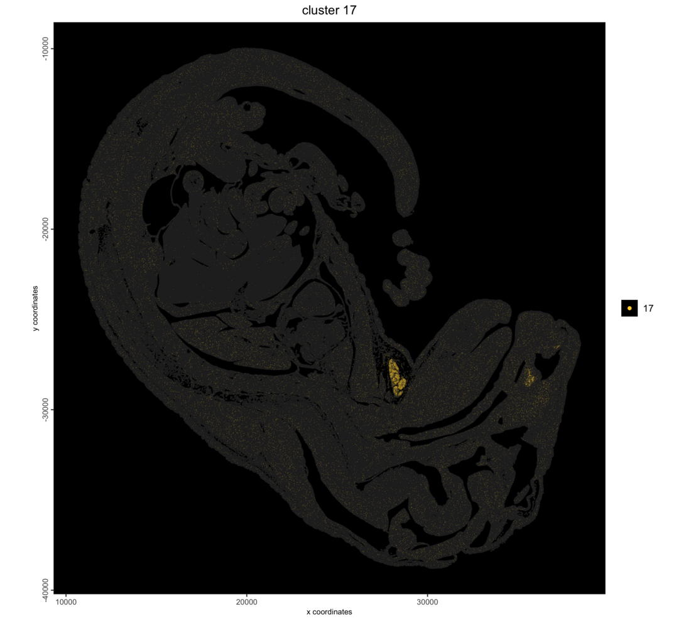
Both have a dense spot at their organ, the thymus and the salivary gland, and thousands of cells everywhere else. These cells have as many counts as any other, so they are not low-quality cells that a stricter filter would remove. They carry transcripts of an organ they are far from, and their identity cannot be read from their markers. The annotation below names them by the signal they carry and marks them as scattered.
10.5 Apply the annotation
The model answers with a cell type for each cluster and a short name
for each node of the tree. Its answer, checked against the markers above
and against where each cluster sits in the tissue, is written out below
as labels. Leiden cluster numbers can change between
package versions or numbers of workers, so check the markers before
reusing these labels on your own run.
The tree splits off one tissue at a time. From the top: the
pancreatic acinar cells, the liver (hepatocytes and the blood cells it
makes at this stage), the epidermis, cartilage, smooth muscle of the gut
wall, the gut epithelium, brown fat, bone, skeletal muscle, the lung
epithelium and the neural tissue of the brain and spinal cord. Each of
these sits together in space. Everything below is one group: the
mesenchyme and the scattered clusters, which differ from each other in a
few organ genes but hardly in anything else. Cluster 6 has the fewest
counts per cell (median about 400) and no clear markers; clusters 14, 22
and 30 are left unresolved, the last two being a few hundred cells held
together by unnamed Gm genes.
annotateClusterTree() turns the tree into cell type
columns at several levels of detail: k is the number of
groups at each level. Cut at 12 groups, the tree separates the eleven
tissues whose clusters sit together in space from one large group
holding the mesenchyme and the scattered clusters.
labels <- list(
# a cell type for each Leiden cluster; "scattered" marks clusters spread
# over the whole section
clusters = c(
"1" = "epidermis",
"2" = "mesenchyme",
"3" = "scattered, islet hormone signal",
"4" = "cartilage",
"5" = "scattered, mast cell signal",
"6" = "low-count cells",
"7" = "skeletal muscle",
"8" = "scattered, squamous epithelium signal",
"9" = "scattered, adrenal cortex signal",
"10" = "scattered, tooth enamel signal",
"11" = "neural",
"12" = "cardiomyocytes, partly scattered",
"13" = "mesenchyme, high counts",
"14" = "unresolved",
"15" = "scattered, pancreatic acinar signal",
"16" = "gut epithelium",
"17" = "scattered, salivary gland signal",
"18" = "scattered, thymus T cell signal",
"19" = "scattered, hair keratin signal",
"20" = "lung epithelium",
"21" = "olfactory epithelium, partly scattered",
"22" = "unresolved",
"23" = "scattered, hair follicle signal",
"24" = "brown fat",
"25" = "smooth muscle",
"26" = "bone",
"27" = "hepatocytes",
"28" = "scattered, pituitary hormone signal",
"29" = "liver, hepatocytes and blood",
"30" = "unresolved",
"31" = "pancreatic acinar cells",
"32" = "hepatocytes"
),
# a short name for each node of the tree
nodes = c(
"31" = "all cells",
"30" = "all but pancreas",
"29" = "all but pancreas and liver",
"28" = "all but epidermis",
"27" = "all but cartilage",
"26" = "all but smooth muscle",
"25" = "all but gut epithelium",
"24" = "all but brown fat",
"23" = "all but bone",
"22" = "all but skeletal muscle",
"21" = "all but lung",
"20" = "liver",
"19" = "mesenchyme and scattered cells",
"18" = "mesenchyme and scattered cells",
"17" = "mesenchyme and scattered cells",
"16" = "liver",
"15" = "mesenchyme and scattered cells",
"14" = "mesenchyme and scattered cells",
"13" = "mesenchyme and scattered cells",
"12" = "low-count and squamous signal",
"11" = "mesenchyme and scattered cells",
"10" = "mesenchyme and scattered cells",
"9" = "mesenchyme and scattered cells",
"8" = "mesenchyme and scattered cells",
"7" = "mesenchyme and scattered cells",
"6" = "mesenchyme and scattered cells",
"5" = "mesenchyme and scattered cells",
"4" = "mesenchyme and scattered cells",
"3" = "mesenchyme and scattered cells",
"2" = "scattered T cell and hair signal",
"1" = "mesenchyme"
)
)
lvls <- GiottoUtils::mixedsort(unique(as.character(pDataDT(g)[[CLUS]])))
g <- annotateClusterTree(g,
tree = tree,
labels = labels,
cluster_column = CLUS,
k = c(12, length(lvls))
)
table(g$cell_types_k12)
bone brown fat
12485 23285
cartilage epidermis
54647 31365
gut epithelium liver
14406 85112
lung epithelium mesenchyme and scattered cells
12385 545551
neural pancreatic acinar cells
69473 4099
skeletal muscle smooth muscle
53195 16032
GiottoVisuals::plotClusterTree(g,
cluster_column = CLUS,
tree = tree,
labels = labels,
k = 12,
gini_markers = gi,
node_labels = FALSE
)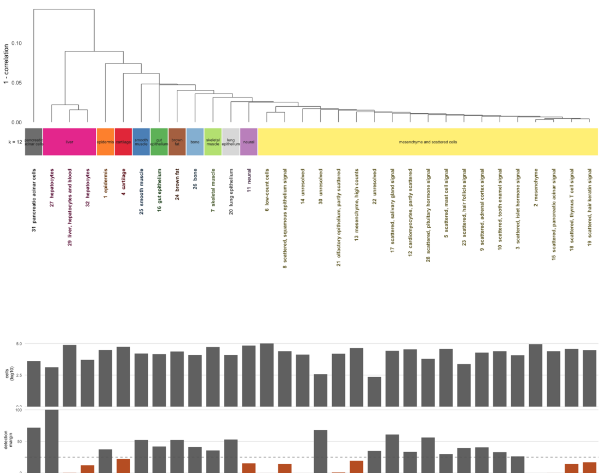
11 Results
Eight colors are about as many as a map can keep apart. The eight largest tissues get one each; bone, lung and the pancreas share a light gray, and the mesenchyme with the scattered clusters a dark gray.
other_organs <- c("bone", "lung epithelium", "pancreatic acinar cells")
g$tissue <- ifelse(g$cell_types_k12 %in% other_organs, "other organs", g$cell_types_k12)
tissue_colors <- c(
"neural" = "#3987e5",
"skeletal muscle" = "#d95926",
"cartilage" = "#199e70",
"epidermis" = "#c98500",
"brown fat" = "#d55181",
"gut epithelium" = "#008300",
"smooth muscle" = "#9085e9",
"liver" = "#e66767",
"other organs" = "#c3c2b7",
"mesenchyme and scattered cells" = "#5a5a5a"
)
spatPlot2D(g,
cell_color = "tissue",
color_as_factor = TRUE,
cell_color_code = tissue_colors,
point_border_stroke = 0,
point_size = 0.15,
background_color = "black",
theme_param = list(legend.position = "right")
)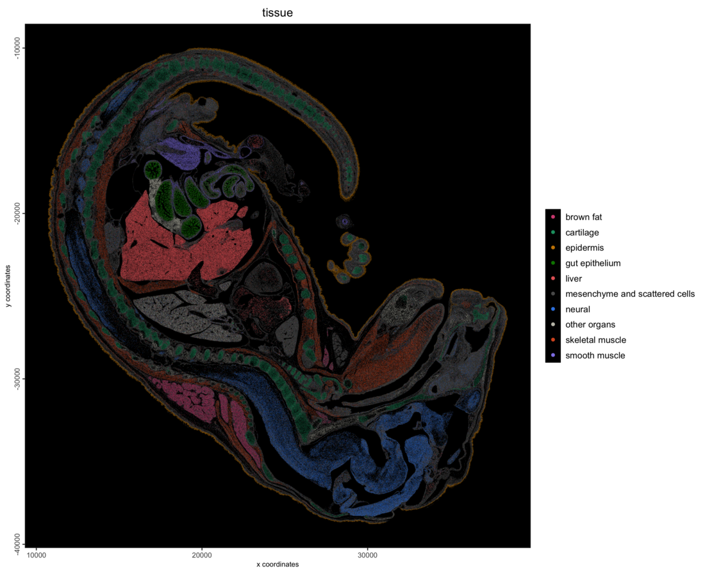
The organs that share the gray, and the heart, are easiest to see by their marker genes: Myh6 (heart), Sftpc (lung), Alb (liver), Col2a1 (cartilage), Fabp2 (gut) and Rag1 (thymus). Alb also shows how far the liver’s transcripts reach: every tissue carries some.
spatFeatPlot2D(g,
expression_values = "normalized",
feats = c("Myh6", "Sftpc", "Alb", "Col2a1", "Fabp2", "Rag1"),
cow_n_col = 3,
point_border_stroke = 0,
point_size = 0.12,
background_color = "black",
gradient_style = "sequential",
order = TRUE
)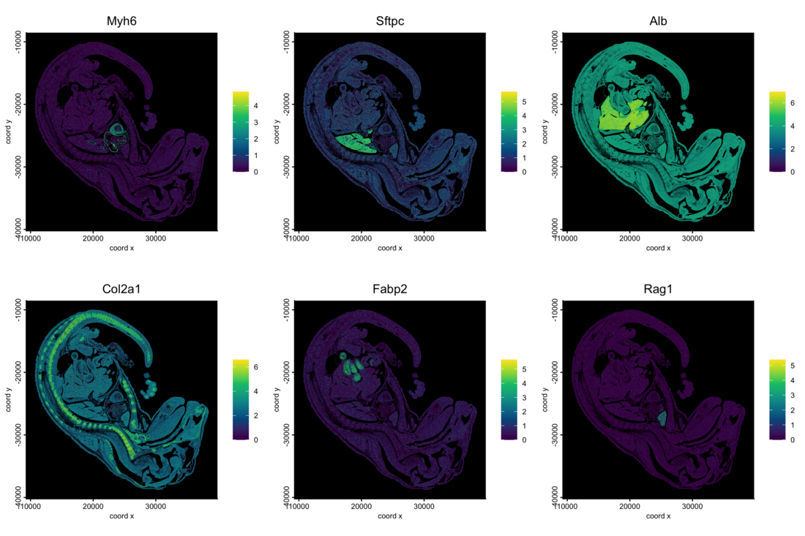
g <- saveGiotto(g, name = "annotated") backend : `gDirSource`
path : path/to/stereoseq_embryo_cells_projectThe object is saved to the project directory and can be reloaded with
loadGiotto(project_dir, name = "annotated").
12 Spatial domains
A spatial domain is a region of tissue with its own mix of expression. Here each cell’s expression is averaged with that of the cells around it, so a cell describes its neighborhood rather than itself, and the averaged cells are clustered. This needs only the cells, not the spots.
12.1 Smooth expression over a spatial network
createSpatialNetwork() connects each cell to its 10
nearest cells. spatialSmoothParam() replaces each cell’s
values with the average of its own and its neighbors’;
hops = 4 repeats this four times, so the average reaches
cells up to four steps away, a few dozen cells around each. On a
disk-backed object, processData() streams the smoothing
through the project and writes the result as a new expression matrix,
smoothed. A smoothed cell holds every gene that any of its
neighbors has, so the matrix is much denser than the counts; only the
2,000 highly variable genes are smoothed.
g <- createSpatialNetwork(g,
method = "kNN",
k = 10,
name = "knn10",
verbose = FALSE
)
g <- processData(g,
spatialSmoothParam(hops = 4, name = "smoothed"),
spatial_network_name = "knn10",
expression_values = "normalized",
feats = hvf
)12.2 Cluster the smoothed cells
The smoothed values go through PCA, a kNN network and Leiden, as the cells did. Smoothing removes most of the cell to cell noise, so a low resolution is enough.
g <- runPCA(g,
expression_values = "smoothed",
feats_to_use = NULL,
ncp = 30,
scale_unit = TRUE,
center = TRUE,
name = "pca_smoothed",
verbose = FALSE
)
g <- createNearestNetwork(g,
type = "kNN",
dim_reduction_name = "pca_smoothed",
dimensions_to_use = 1:20,
k = 15,
engine = "hnsw",
name = "knn_smoothed",
verbose = FALSE
)
g <- doLeidenCluster(g,
nn_network_to_use = "kNN",
network_name = "knn_smoothed",
resolution = 0.1,
n_iterations = 20,
objective_function = "modularity",
name = "domain",
verbose = FALSE
)
table(pDataDT(g)$domain)
1 2 3 4 5 6 7 8 9 10 11
115858 113196 165782 10888 20880 107609 15757 24734 50236 12162 83638
12 13 14 15 16 17 18 19 20
12022 16 92356 41 15760 43909 33843 3265 83
domains <- GiottoUtils::mixedsort(unique(as.character(pDataDT(g)$domain)))
domain_colors <- stats::setNames(getDistinctColors(length(domains)), domains)
spatPlot2D(g,
cell_color = "domain",
color_as_factor = TRUE,
cell_color_code = domain_colors,
point_border_stroke = 0,
point_size = 0.15,
background_color = "black"
)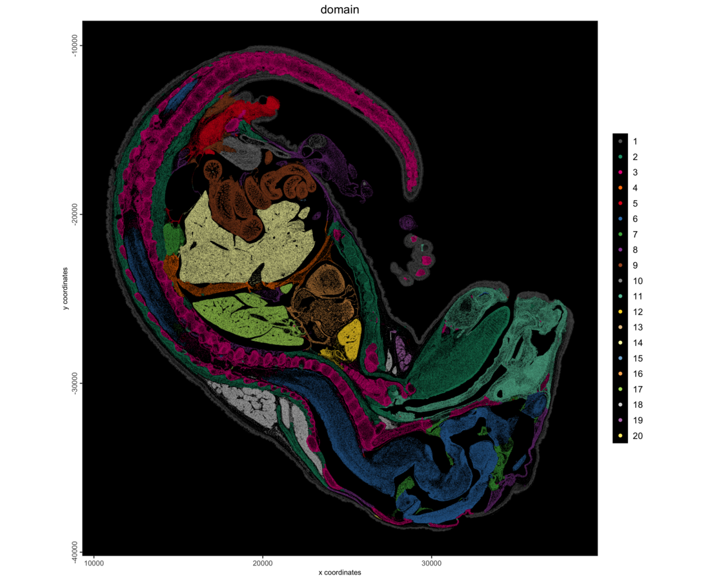
Twenty domains, most of them organs or tissue layers. By their markers below and their place in the section: the skin (domain 1), skeletal muscle of the body wall, the tongue and the diaphragm (2 and 4), the cartilage of the spine and the skull (3), the brain and spinal cord (6), with the choroid plexus in the ventricles as its own domain (7, Ttr), the dermis and connective tissue (8), the gut (9) and the smooth muscle of its wall (10), bone and the nasal region (11), the thymus (12), the liver (14), the heart (16), the lung (17), brown fat (18) and the salivary glands (19). Domains 13, 15 and 20 hold fewer than 100 cells each. Domain numbers, like cluster numbers, can change between runs.
12.3 Domain markers
The top markers of each domain, from the unsmoothed expression:
dom_markers <- findMarkers_one_vs_all(g,
method = "scran",
cluster_column = "domain",
min_feats = 3,
verbose = FALSE
)
top_dom <- unique(dom_markers[, head(feats, 3), by = cluster]$V1)
plotMetaDataHeatmap(g,
expression_values = "normalized",
metadata_cols = "domain",
selected_feats = top_dom,
return_plot = FALSE
)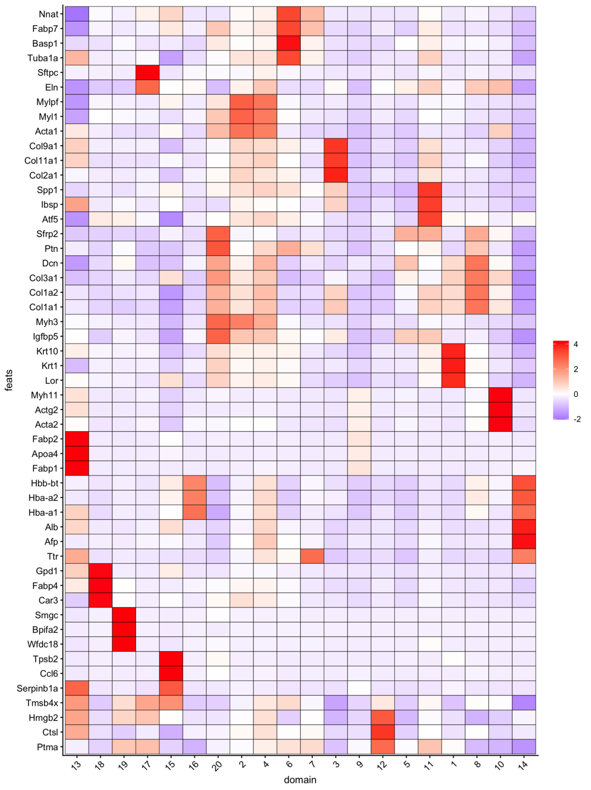
12.4 Domains and cell types
The share of each domain’s cells in each of the 12 cell type groups. Some domains are mostly one organ’s cells: the gut, the liver, smooth muscle, brown fat and the brain. In most others, the largest share is the group holding the mesenchyme and the scattered clusters, since those cells are found everywhere. Their domain says more about where they are than their cluster does.
dom_tab <- pDataDT(g)[, .N, by = .(domain, cell_types_k12)]
dom_tab[, share := N / sum(N), by = domain]
dom_tab[, domain := factor(domain, levels = domains)]
ggplot2::ggplot(dom_tab, ggplot2::aes(cell_types_k12, domain, fill = share)) +
ggplot2::geom_tile() +
ggplot2::scale_fill_gradient(low = "white", high = "#1c5cab", labels = scales::percent) +
ggplot2::labs(x = NULL, y = "domain", fill = "share of\ndomain") +
ggplot2::theme_minimal() +
ggplot2::theme(
panel.grid = ggplot2::element_blank(),
axis.text.x = ggplot2::element_text(angle = 45, hjust = 1)
)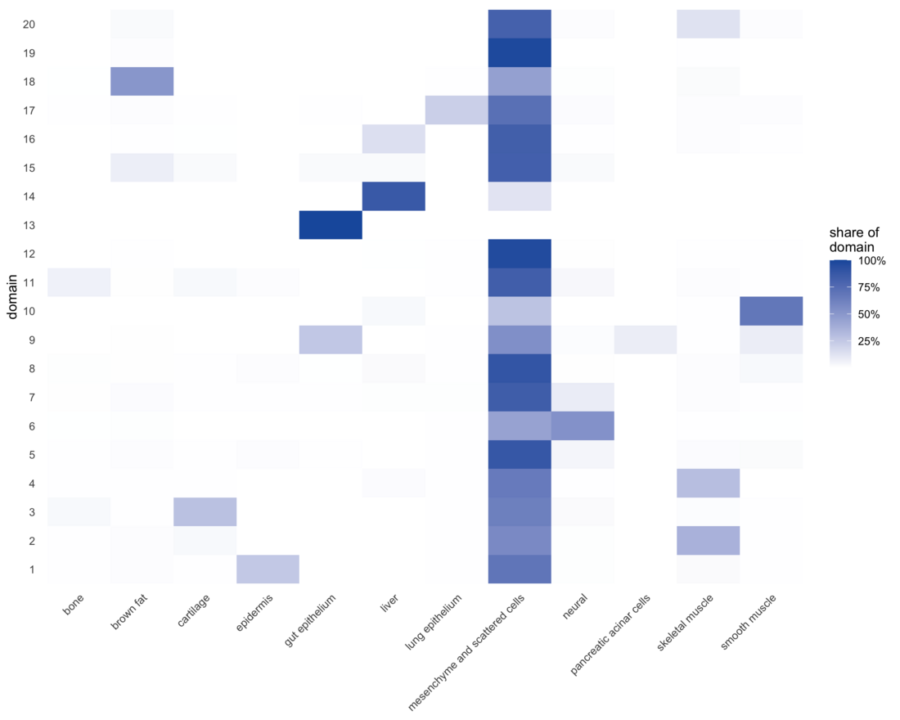
g <- saveGiotto(g, name = "domains") backend : `gDirSource`
path : path/to/stereoseq_embryo_cells_projectThe object is saved to the project directory and can be reloaded with
loadGiotto(project_dir, name = "domains").
13 Further reading
- Stereo-seq human colon: segmented cells, the same cell analysis, with spatial domains built from the spots in hexagonal bins instead of from smoothed cells
- Stereo-seq mouse testis: segmented cells, the same steps on a fresh frozen section
- Stereo-seq Data Import, which covers the readers and the files in a SAW output directory
14 Run time and memory
How long each section of this tutorial took and the most memory it used, on a run of this tutorial on an Apple M2 Ultra with 24 cores and 192 GB of memory, with the 8 workers set in Setup. The data were read from an external SSD and the project written to the internal disk. The whole tutorial took about 26 minutes. Reading the cells peaks at 36 GB. The spatial domains take the longest and the most memory, 11 minutes and 57 GB: after four rounds of smoothing every cell holds nearly all 2,000 genes, so the smoothed matrix is close to dense, and its PCA takes about 4 minutes. Smoothing fewer genes or fewer hops lowers both. In the clustering, the kNN network and Leiden take about 4 and 3 minutes. The memory R takes stays with the session until it ends.
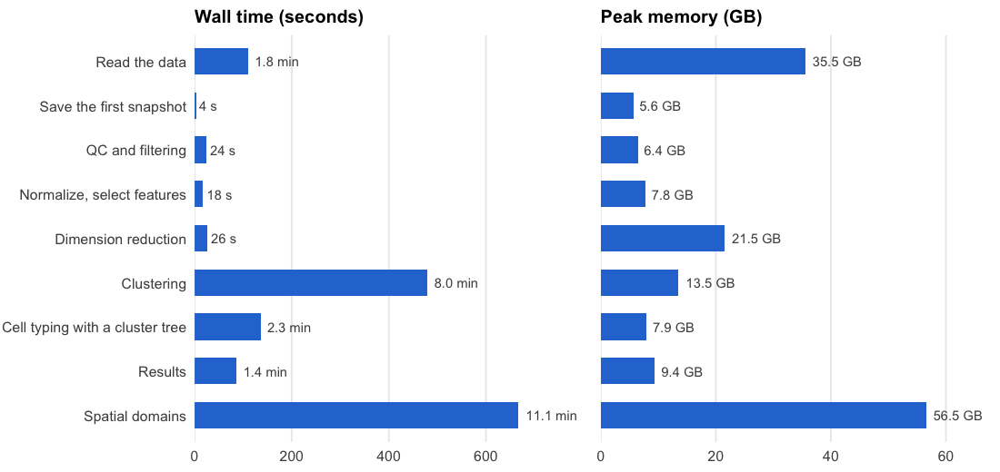
Memory is what macOS counts for the R session and its workers together (the Memory column of Activity Monitor), sampled once a second; each bar is the highest value during that section. Fewer workers in Setup lower it.
Time and memory per section
| Section | Time | Memory |
|---|---|---|
| Read the data | 1.8 min | 35.5 GB |
| Save the first snapshot | 4 s | 5.6 GB |
| QC and filtering | 24 s | 6.4 GB |
| Normalize, select features | 18 s | 7.8 GB |
| Dimension reduction | 26 s | 21.5 GB |
| Clustering | 8.0 min | 13.5 GB |
| Cell typing with a cluster tree | 2.3 min | 7.9 GB |
| Results | 1.4 min | 9.4 GB |
| Spatial domains | 11.1 min | 56.5 GB |
15 Session info
R version 4.5.1 (2025-06-13)
Platform: aarch64-apple-darwin20
Running under: macOS Sonoma 14.5
Matrix products: default
BLAS: /Library/Frameworks/R.framework/Versions/4.5-arm64/Resources/lib/libRblas.0.dylib
LAPACK: /Library/Frameworks/R.framework/Versions/4.5-arm64/Resources/lib/libRlapack.dylib; LAPACK version 3.12.1
locale:
[1] en_US/C/en_US/C/en_US/en_US
time zone: America/New_York
tzcode source: internal
attached base packages:
[1] stats graphics grDevices utils datasets methods base
other attached packages:
[1] GiottoDisk_0.0.0.6 Giotto_4.3.5 GiottoClass_0.7.26 arrow_23.0.1.2
loaded via a namespace (and not attached):
[1] RColorBrewer_1.1-3 ggdendro_0.2.0
[3] jsonlite_2.0.0 wk_0.9.5
[5] magrittr_2.0.4 magick_2.9.1
[7] farver_2.1.2 rmarkdown_2.31
[9] vctrs_0.7.2 memoise_2.0.1
[11] GiottoUtils_0.2.9 terra_1.9-11
[13] htmltools_0.5.9 S4Arrays_1.8.1
[15] BiocNeighbors_2.2.0 Rhdf5lib_1.30.0
[17] SparseArray_1.8.1 rhdf5_2.52.1
[19] sass_0.4.10 parallelly_1.46.1
[21] bslib_0.10.0 htmlwidgets_1.6.4
[23] plotly_4.12.0 cachem_1.1.0
[25] igraph_2.2.2 lifecycle_1.0.5
[27] pkgconfig_2.0.3 rsvd_1.0.5
[29] Matrix_1.7-3 R6_2.6.1
[31] fastmap_1.2.0 GenomeInfoDbData_1.2.14
[33] MatrixGenerics_1.20.0 future_1.70.0
[35] digest_0.6.39 colorspace_2.1-2
[37] S4Vectors_0.48.1 dqrng_0.4.1
[39] irlba_2.3.7 GenomicRanges_1.60.0
[41] beachmat_2.24.0 filelock_1.0.3
[43] labeling_0.4.3 progressr_0.19.0
[45] httr_1.4.8 polyclip_1.10-7
[47] abind_1.4-8 compiler_4.5.1
[49] bit64_4.6.0-1 withr_3.0.2
[51] S7_0.2.1 backports_1.5.1
[53] BiocParallel_1.42.2 viridis_0.6.5
[55] ggforce_0.5.0 R.utils_2.13.0
[57] sedonadb_0.5.0.9000 MASS_7.3-65
[59] DelayedArray_0.34.1 rjson_0.2.23
[61] bluster_1.18.0 gtools_3.9.5
[63] GiottoVisuals_0.2.16 tools_4.5.1
[65] otel_0.2.0 future.apply_1.20.2
[67] R.oo_1.27.1 glue_1.8.0
[69] dbscan_1.2.4 rhdf5filters_1.20.0
[71] grid_4.5.1 checkmate_2.3.4
[73] cluster_2.1.8.3 generics_0.1.4
[75] gtable_0.3.6 R.methodsS3_1.8.2
[77] tidyr_1.3.2 data.table_1.18.2.1
[79] metapod_1.18.0 BiocSingular_1.24.0
[81] tidygraph_1.3.1 ScaledMatrix_1.16.0
[83] XVector_0.48.0 BiocGenerics_0.54.1
[85] tilework_1.0.0 ggrepel_0.9.8
[87] pillar_1.11.1 limma_3.64.3
[89] RcppHNSW_0.7.0 nanoarrow_0.9.0
[91] dplyr_1.2.0 tweenr_2.0.3
[93] lattice_0.22-7 bit_4.6.0
[95] tidyselect_1.2.1 locfit_1.5-9.12
[97] SingleCellExperiment_1.30.1 scuttle_1.20.0
[99] knitr_1.51 gridExtra_2.3
[101] IRanges_2.42.0 Seqinfo_1.0.0
[103] edgeR_4.6.3 SummarizedExperiment_1.38.1
[105] scattermore_1.2 stats4_4.5.1
[107] xfun_0.61 graphlayouts_1.2.3
[109] Biobase_2.68.0 statmod_1.5.1
[111] matrixStats_1.5.0 UCSC.utils_1.4.0
[113] lazyeval_0.2.2 yaml_2.3.12
[115] GiottoKernels_0.3.0 evaluate_1.0.5
[117] codetools_0.2-20 ggraph_2.2.2
[119] tibble_3.3.1 colorRamp2_0.1.0
[121] cli_3.6.5 uwot_0.2.4
[123] reticulate_1.45.0 jquerylib_0.1.4
[125] Rcpp_1.1.2 GenomeInfoDb_1.44.3
[127] globals_0.19.1 png_0.1-9
[129] parallel_4.5.1 ggplot2_4.0.2
[131] assertthat_0.2.1 scran_1.38.1
[133] listenv_0.10.1 SpatialExperiment_1.20.0
[135] geoarrow_0.4.4 viridisLite_0.4.3
[137] scales_1.4.0 purrr_1.2.1
[139] crayon_1.5.3 rlang_1.1.7
[141] cowplot_1.2.0